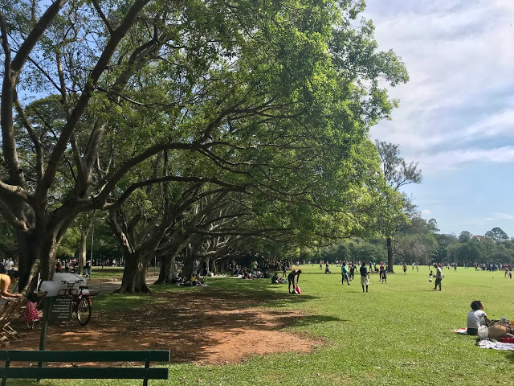
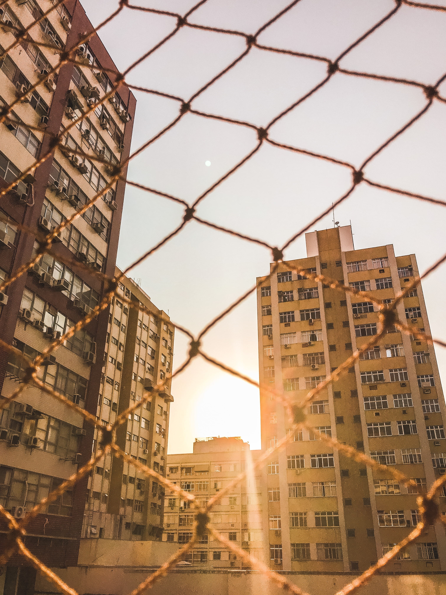
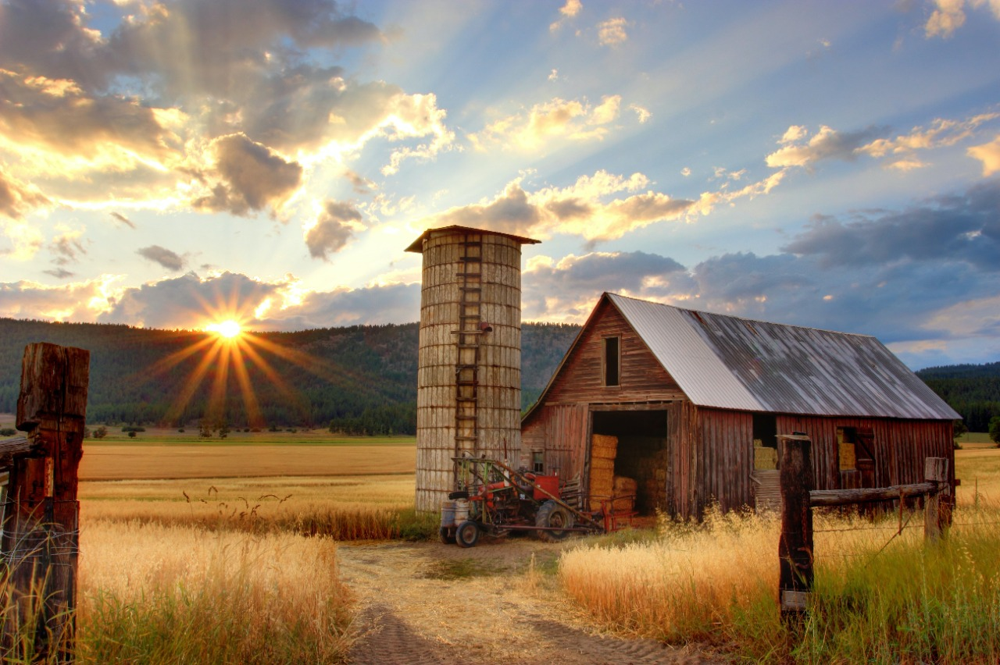

É muito importante saber desde pequeno onde você nasceu, a sua cidade, a escola onde você estuda e onde você deseja morar algum dia.
Abaixo você poderá acessar o Google Maps para descobrir a localização de sua casa, de sua escola, o seu bairro e muitos outros lugares.
Google MapsEspaços públicos são os lugares onde é comum para todos e posse de todos, ou seja todas as pessoas podem entrar e andar naquele espaço. Alguns exemplos de lugares públicos: parques, escolas, hospitais, zoológicos e muitos outros.
Espaços privados são aqueles onde a pessoas são donas daquele lugar ou estabelecimento. Alguns exemplos de lugares privados: casas, lojas comerciais, shopping centers, escolas particulares e muitos outros. Os responsáveis pelo local são os próprios donos.
As zonas rural e urbana são dois tipos espaços geográficos diferentes.
A zona rural também chamada de campo, são aquelas afastadas do meios urbanos e dos centros das cidades. Nas zonas rurais é muito comum a prática de atividades de agricultura, agropecuária, plantações, turismo rural, conservação ambiental entre muitas outras práticas. As pessoas que moram no campo formam uma comunidade rural.
A zona urbana também conhecida como os centros das cidades, são áreas municipais que passarm pelo processo de urbanização principalmente durante a industrialização. Além disso a população que vive nas áreas urbanas é bem maior que a população que vive nos campos. As pessoas que vivem nas cidades formam a comunidade urbana. Nas zonas urbanas existem diversas construções que muitas das vezes não existem nas zonas rurais, como por exemplo: ruas, avenidas asfaltadas, condomínios, hospitais, escolas, abastecimento de água, sistema de esgoto e muito mais.